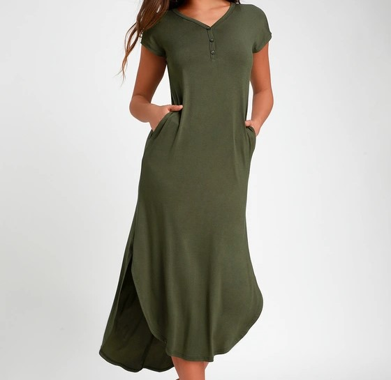
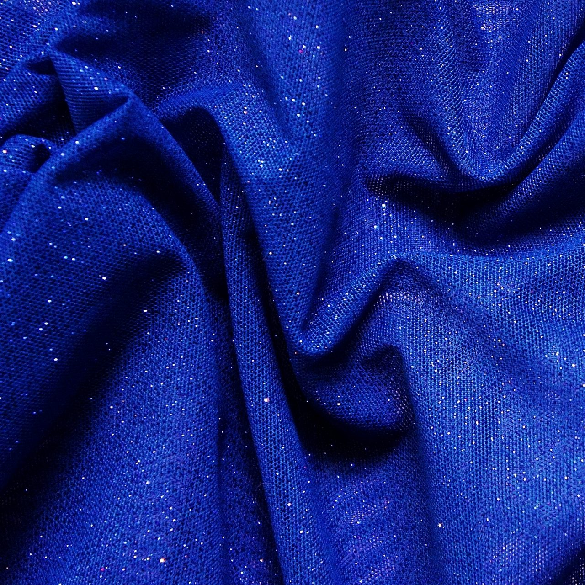
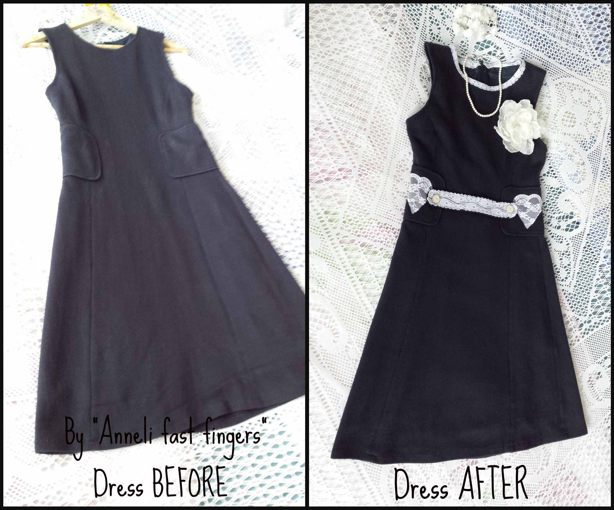

Clothing
Fabrics
Adjustments


About the Seamstress
Elizabeth Armstrong: wife, cashier, and independent seamstress enjoys the craft of creating beautiful clothing, using quality fabrics, and making adjustments to your needs. Beginning her experience since the young age of 14, she has grown to become a well-respected seamstress. Her creations include Disney Princess dresses, halloween costumes, skirts, shirts, and the list goes on. Though still new to the community, she is eager to learn more and accepting new challenges. Learn more about Elizabeth and her at her Facebook Page!
Facebook PageOur Vision
Creating products that allow a customer's creativity to set the bar while still maintaining well fitting designs and saving money in your wallet. Contact us so we can help you on your next outfit/project!
Contact Us